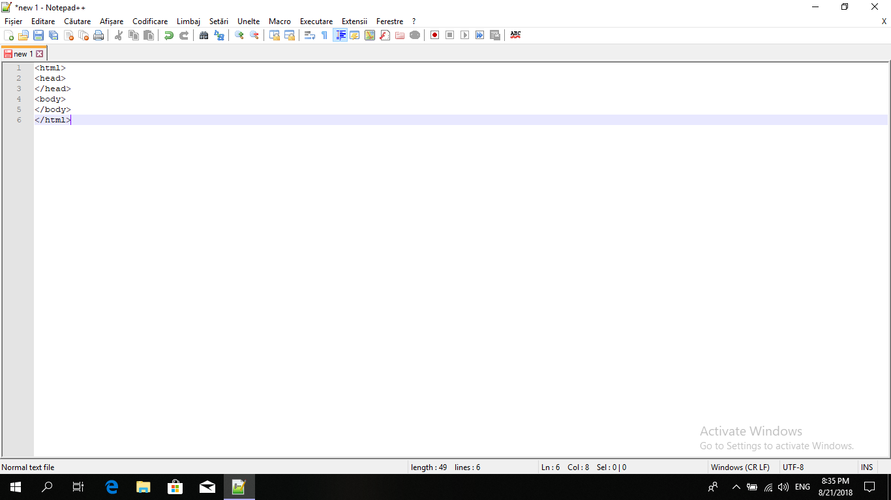
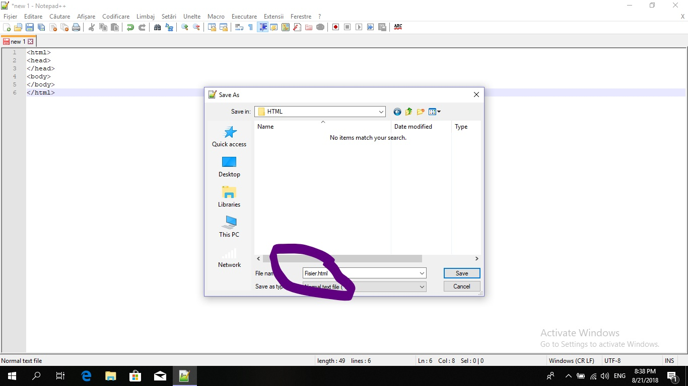
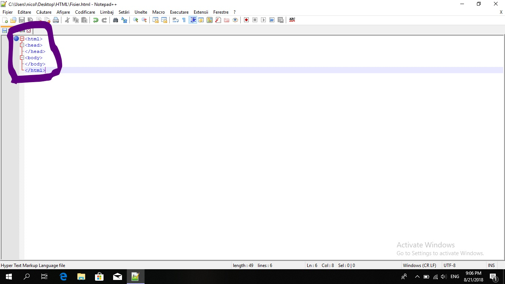

HomeCuvant inainte Daca ai intrat pe acest web site inseamna ca te insereseaza calculatoarele si programarea (la fel si pe mine). Nu stiu cate cunosti despre web development, dar in cazul in care vrei sa performezi cu aceasta disciplina trebuie sa stii ca pentru a face o simpla pagina sau un site cu scop informativ, indiferent de cat de profesionist va fi, ai nevoie de niste timp, de suficienta pasiune, plus rabdare.De ce am nevoie ca sa incep? Pai, ca sa iti reaspund la intrebare iti trebuie doar un editor de cod sursa -source code editor-, adica acel loc unde developerul scrie codul sursa al pagini de web in limbajul HTML. Uite linkul de descriere: Notepad ++Intra in sectiunea download si descarca ultima versiune. Cum se foloseste Notepad++ ? Intra si scrie ceva in program. Deoarece toatele datele se afla pe PC-ul tau, nu vei avea nevoie de conexiune la net, doar daca folosesti vreun link extern, dar nu este cazul inca.  Iar apoi salveaza fisierul cu extensia .html .  Dupa salvarea fisierului vei vedea cuvintele rezervate HTML- ului (cuvinte ce apartin unui domeniul unicat sau
mai multe asemanatoare cum sunt html, head, body etc.) colorate in albastru.
 Hello World! Pentru a afisa un cod simplu, de genul "Hello World!" ai un cod in exemplul de mai jos:
Sunt necesare atatea randuri? Nu :). Dar se folosesc atatea randuri pentru a fi totul structurat si frumos, astfel incat fiecare eticheta de inceput (html, body, head) sa aiba un rand unicat si fiecare eticheta de sfarsit sa aiba un rand unicat, iar intre sa se afle continutul. Sfarsit Bravo, ai invatat sa faci un program simplu, sper ca te pui si pe celelalte lectii din capitolul html. Acum pune-te pe invatat. |